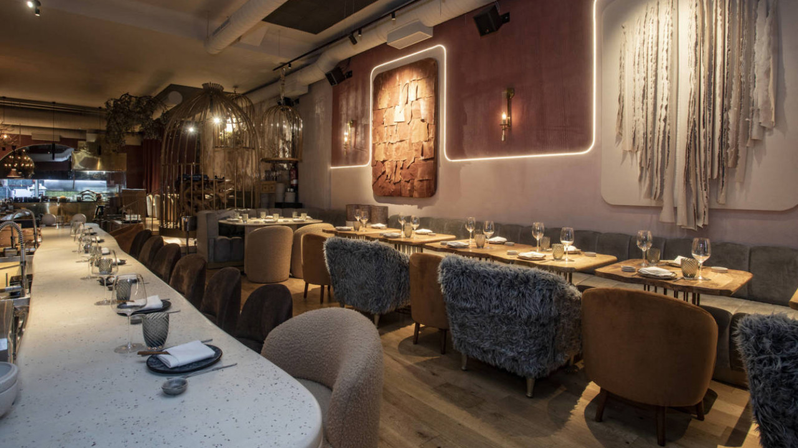

Cocina de autor · Bogotá
El sabor también cuenta historias.
AndyGusteau combina ingredientes colombianos, técnicas contemporáneas y una mesa pensada para quedarse un rato más.

Mesa 07 · La favorita de la casaNuestra historia
Una cocina con memoria y curiosidad.
AndyGusteau nació de una pregunta sencilla: ¿qué pasa cuando una receta familiar se encuentra con una mirada nueva? Cada plato parte de una memoria local y llega a la mesa con una presentación actual.
Con cariño, Andy.
ingredientes protagonistas por temporada
Origen · Técnica · EncuentroLo que encontrarás
Una experiencia completa
- 01Menú de temporadaPlatos que cambian con el mejor producto disponible.
- 02Maridajes honestosVinos y bebidas pensados para acompañar, no competir.
- 03Atención cercanaUna bienvenida cálida desde que llegas hasta el último café.
Información práctica
Planea tu visita
| Servicio | Días | Horario | Dirección |
|---|---|---|---|
| Almuerzo | Martes a viernes | 12:00 - 15:00 | Cra. 5 # 72-18 |
| Cena | Martes a sábado | 18:00 - 22:30 | Cra. 5 # 72-18 |
| Brunch | Domingos | 10:00 - 14:00 | Cra. 5 # 72-18 |
Desde nuestra cocina
El ritual detrás de cada plato
Línea A · Formularios y peticiones
Frontend hoy, backend mañana.
Este proyecto es un sitio estático: HTML, CSS y JavaScript se ejecutan en el navegador. En un restaurante real, un backend guardaría reservas y clientes. Allí GET consultaría disponibilidad, POST crearía una reserva, PUT actualizaría sus datos y DELETE la eliminaría.